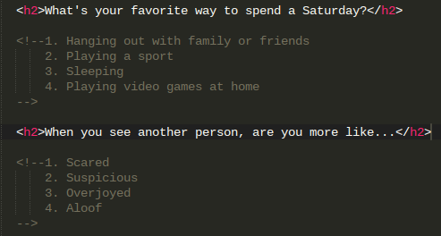

In this project, you're going to make a quiz just like BuzzFeed! Go ahead and take a few minutes to brainstorm a theme for your quiz. Once you have it, you're ready to get started with Step 1.
1. Make a title for your quiz using a header tag and add a description in a smaller font size. Don't forget to add yourself as the author!
2. Find an image that represents the theme of your quiz and add it to your page.
3. Now you're ready to ask some questions. Come up with 5 questions to ask your readers and add them to your page using a smaller header tag than your title.
4. Every question needs an answer! Create four possible answers for each question. Write them out using comments so you remember what they are.

5. Now it's time to display the answers. But how? You can use words or you can use img tags to display images (even gifs!). You can organize your answers with div, li, a, or button tags. The options are endless!
6. Now that your page has all the information it needs, it's time to add some style 😎 Using CSS, change the background color of your page.
7. Make a stripe across the top of the page in a different background color and add in the name of your publication.
8. Look up Google fonts and pick out a font or two that you think works well with your brand. You could also head over to The Noun Project to find a logo.
9. Are your answers divided into columns or rows? Try experimenting with Flexbox. This playground might prove useful!
10. We have our look, now we just need some interaction. That's where JavaScript comes in! Using JQuery, animate your answers so that they respond when a user clicks on them. They could change color or shape or opacity! Make sure that when you click one answer, the other answers maintain their original style.
11. Now it's time to score your quiz. What system will you use? You could use a variable to count correct answers or a scale to weigh each response. Don't forget to display the result!